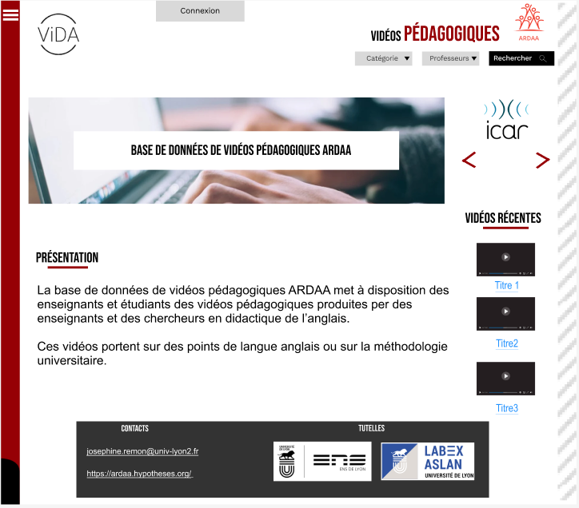

AMADIS
Conception et développement d’un outil d’aide et de pilotage à destination d’organisateurs d’événements. Cette application est développée par une équipe de 5 étudiants (à peu près 100 heures de travail / étudiant-e) et elle est composée de plusieurs parties: conception, IHM, graphes, méthodes numériques et gestion de projet.
HOPEFIELD
Projet de développement d'une application de vente aux enchères de fossiles. Ce projet a duré six mois et a été réalisé par une équipe de 7 personnes. L'application a été développée avec PHP, des maquettes ont été réalisées avec Figma et la base de données a été mise en place avec MySQL.

EZ-Stage
Projet visant à améliorer une application existante. Nous avons revu la structure de la base de données, révisé le code, amélioré l'application mobile avec Android Studio, et déployé l'application sur un serveur avec Docker. Le projet a été développé avec Symfony pour la partie web, Android Studio pour la partie mobile, Figma pour les maquettes et MySQL pour la base de données. Nous étions 6 personnes sur ce projet.
DAHU
Projet réalisé par un groupe de 7 personnes, dont j'étais le chef de projet. Ce projet a duré 6 mois et visait à créer un site web pour l'association DAHU à Grenoble, qui propose des bons plans pour les étudiants. Les fonctionnalités incluent la recherche d'activités, la notation et les avis des utilisateurs. Le projet a été développé avec Angular pour le front-end, Symfony-api-plateforme pour l'API backend, et la base de données a été créée avec MySQL. Nous avons utilisé Figma pour les maquettes.
ViDA
Projet réalisé lors de mon stage de deuxième année qui a duré 3 mois au sein de l'Ecole Normale Supérieure de Lyon. ViDA est un site web permettant la mutualisation et le partage de vidéos pédagogiques. Les étudiants peuvent facilement accéder à ces vidéos grâce à cette plateforme. Le projet a été réalisé avec Symfony pour le backend et le frontend.

Hbase
Projet réalisé lors de mon stage de troisième année, d'une durée de 4 mois. Hbase consistait à développer une application backend pour le stockage, la récupération, le filtrage et le tri des données des rapports de tests. Le projet a utilisé Django, un framework Python, PostgreSQL pour la base de données et Postman pour tester l'API.